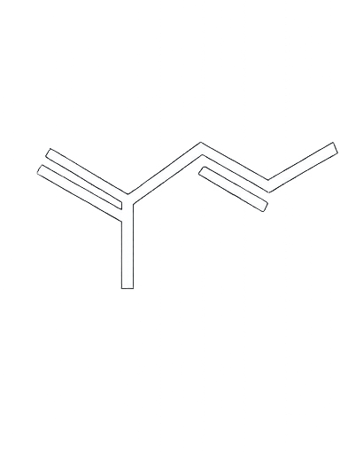
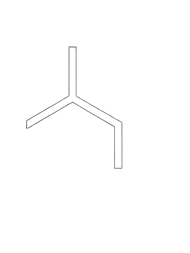
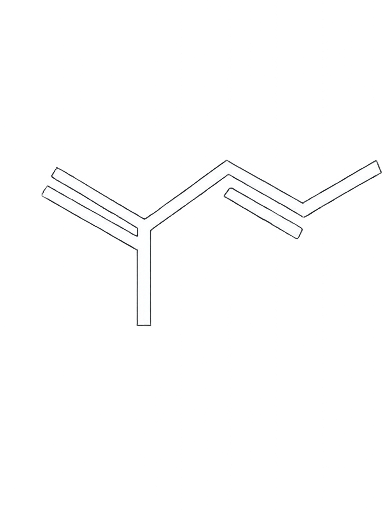
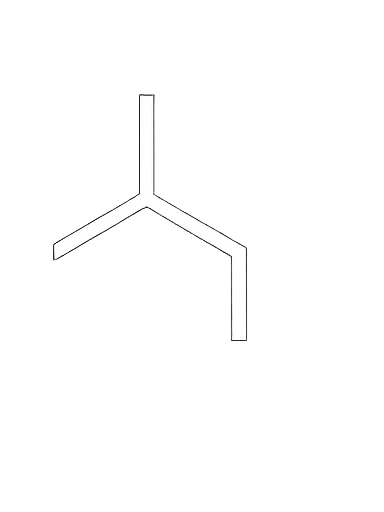

 Iniciar sesión
Iniciar sesión
Una herramienta
para ti...
Plataforma colaborativa para consultar y agregar términos técnicos del área regulatoria. Diseñada para estudiantes, profesionales y equipos que trabajan en química, farmacia y documentación regulatoria.
Sobre la Plataforma
Durante la revisión de documentos técnicos en el ámbito farmacéutico, se identificó una dificultad común: muchos términos clave no están explicados adecuadamente en ningún recurso accesible, especialmente cuando se requiere traducirlos del inglés al español. Aunque para hablantes nativos el significado puede ser intuitivo, para quienes no dominan el idioma con fluidez, entender estos términos en profundidad puede ser desafiante.
Ante esta necesidad, surge la idea de crear Diccionario AR (Asuntos Regulatorios), una plataforma digital orientada a cubrir todo el espectro de vocabulario técnico presente en la documentación regulatoria de productos farmacéuticos. Este proyecto no está enfocado en una entidad específica, sino que está diseñado para ser útil a toda la comunidad profesional involucrada en traducción, revisión y elaboración de expedientes regulatorios.
El sitio está dedicado especialmente a personas que, si bien participan activamente en procesos técnicos, pueden no tener un dominio avanzado del idioma inglés. Está pensado para apoyar a profesionales de áreas como química y farmacia, microbiología, biotecnología, asuntos regulatorios, control de calidad, producción, investigación clínica y más.
Diccionario AR fue construido con tecnologías web modernas y con el compromiso de mantenerse siempre gratuito. Su propósito es servir a la comunidad técnica hispanohablante, fomentando el acceso al conocimiento y la colaboración.
En la sección Diccionario encontrarás un buscador de definiciones. Puedes ingresar términos tanto en inglés como en español. Esta herramienta puede anclarse (bookmark) en tu navegador y abrirse al inicio de cada jornada laboral. Además, funciona en modo offline: si pierdes la conexión, solo debes presionar el botón Actualizar una vez al día cuando tengas acceso a internet. A partir de ese momento, podrás seguir utilizándolo sin conexión, sin necesidad de recargar la página.
La sección Agregar término está pensada para enriquecer continuamente la base del diccionario, que actualmente cuenta con 344 términos técnicos. Si deseas colaborar, asegúrate de que la definición que compartas sea precisa. En caso de detectar un error, puedes contactar a nuestro equipo para corregirlo.
En Sugerencias podrás aportar ideas, funcionalidades o mejoras que consideres útiles. Como mencionamos desde el principio, esta plataforma es construida por y para la comunidad.
Gracias a quienes ya forman parte y a quienes se unan en adelante. Esperamos que esta herramienta sea verdaderamente útil para ti y para todas las personas que dedican su labor a mantener altos estándares técnicos en la industria farmacéutica y regulatoria.